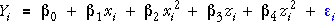
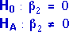
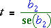

Hypotheses
We have described a model that can explain some forms of curvature in the relationship between Y and the two explanatory variables, X and Z,

This suggests hypothesis tests for curvature, based on whether the coefficients of the two quadratic terms are zero. For example, testing whether there is curvature in X corresponds to the hypotheses,

Test for curvature
As in other general linear models, this can be tested with a t-test based on the ratio of the least squares estimate of the parameter and its standard error,

(A general formula for the standard error of least squares estimates for the general linear model was given earlier.)
If there is no curvature, this t-statistic has a t distribution with (n - 5) degrees of freedom, so the p-value for the test is the tail area of this distribution.
Most statistical software for fitting linear models gives a table of all parameter estimates, their standard errors, t-ratios and p-values. This table avoids the need to do any calculations by hand.
Energy expenditure of bees
In an experiment, an entomologist recorded energy expenditure (joules/sec) for bees drinking water with different sucrose concentrations (%) and at different temperatures. Energy expenditure is the response measurement.
The table under the data shows all parameter estimates and the associated standard errors, t-ratios, and p-values for the model with quadratic terms in both variables. The only two p-values of interest in this table are those associated with the two quadratic terms. From them, we can conclude that:
Do not try to interpret the p-values associated with the linear terms and the intercept in this table. For example, it makes no sense to test whether the linear coefficient of temperature is zero when there is already a quadratic term in the model. (Remember that the p-values each test whether one coefficient is zero in the full model with all other terms present.)